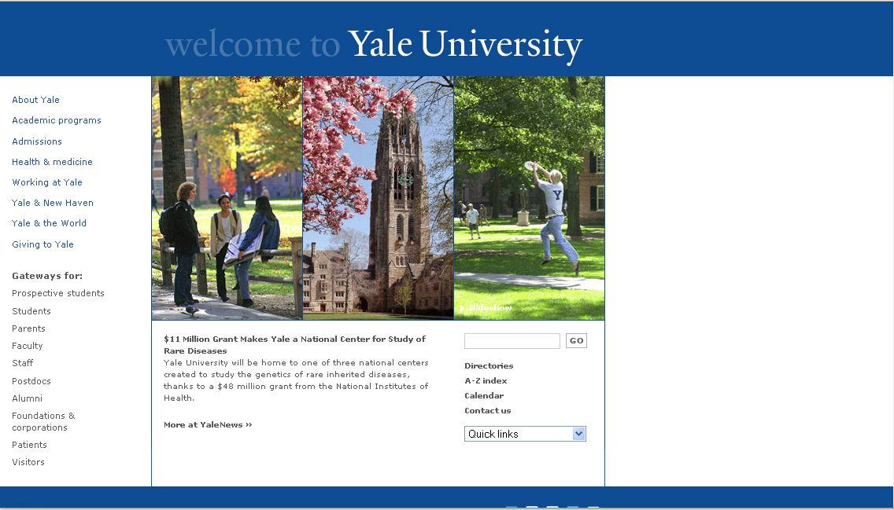

il sito è organizzato in modo molto semplice ed è facile cercare qualsiasi informazione. Partendo dalla homepage si trova facilmente qualsiasi informazione inerente alla facoltà. Unica pecca non c'è la possibilità di avere il sito in un'altra lingua, ma è solo in inglese.
Altre pagine
- tutte la pagine sono organizzate nello stesso modo e si ritorna facilmente alla homepage come ad esempio la pagina di riferimento degli studenti
- le pagine delle singole facoltà invece sono organizzate in modo differente per ogni facoltà e questo è molto utile in quanto permette di gestire in modo autonomo e a seconda delle esigenze i contenuti utili per ogni singola facoltrà